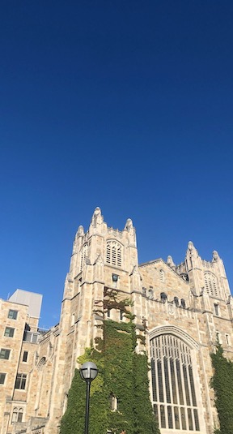

I am a junior at the University of Michigan majoring in Information Analysis within the School of Information. I am minoring in Polish Language, Literature & Culture and Entrepreneurship. This past summer I interned at Quicken Loans as a Software Engineering Intern, where I expanded my technical skillset in a professional setting. I interned at Quicken Loans during the summer of 2019 as well, but as a Special Projects Intern, where I gained experience working with technology and business in a variety of different ways. I am very passionate about making computer science education more accessible to people of all backgrounds.
